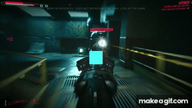

Sobre Cyberpunk 2077
Cyberpunk 2077 é um RPG de ação e aventura em mundo aberto desenvolvido pela CD Projekt Red, criadores da série The Witcher.
O Mundo de Night City
Ambientado em Night City, uma megalópole obcecada por poder, glamour e modificações corporais, você joga como V, um mercenário em busca de um implante único que é a chave para a imortalidade.

Vista panorâmica de Night City

Personagens memoráveis

Ação intensa
Principais Características
- Mundo aberto vasto e detalhado
- Sistema de progressão de personagem não-linear
- Combate avançado com armas e cibernéticos
- Narrativa complexa com múltiplos finais
- Customização profunda de personagem e veículos